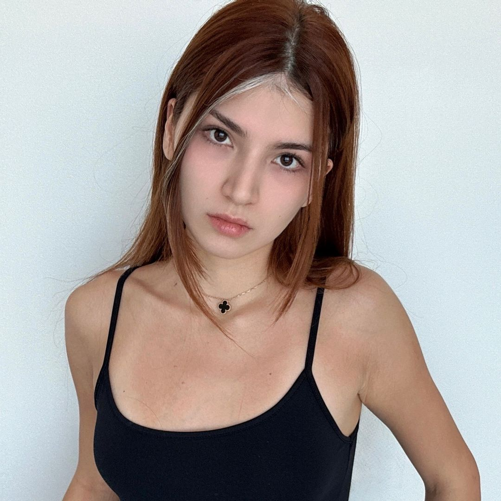

Zara
Zara one of my favorite person i met Zara through Kate's live streams, and after, I started watching Zara's own streams. She has become one of my favorite hosts! Zara is such a kind, amazing, and intelligent person. She has a great sense of humor, which makes her streams so fun and enjoyable. I always love joining her live streams and spending time there, it's truly a positive and entertaining experience.